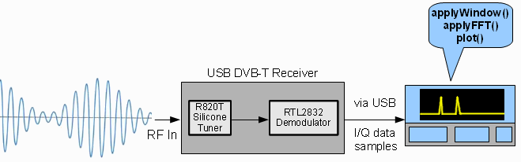

What is SpectrumScan?
SpectrumScan is a spectrum analyzer with a 2GHz frequency range built on the beaglebone black that allows you capture and display the radio wave frequencies that we're surrounded by everyday. It works by using USB DVB-T television reciever based on the RTL2832 demodulator chip which allows direct access to the I/Q data using the rtl-sdr library. A Fast-Fourier-Transform(FFT) is performed on the sampled signals which converts the data to the frequency domain and is then plotted on the screen.
In this page I show you how to build your very own SpectrumScan so you too can explore a wide range of fequencies including FM radio, television, emergency & weather radio, citizen band, and many more!
Features
The following features are currently available on SpectrumScan Version 1.0
- Touchscreen 7.0" LCD display
- Browse the spectrum by scrolling horizontally
- User adjustable gain setting
- 2.4MHz Bandwidth
- Instantaneous spectrum plot
- Waterfall spectrum plot
Demo
add video and or pictures of spectrumscan
Hardware and Software
Here is the complete list of hardware and software components. The entire project can be built for around $150.
Hardware:
- Beaglebone black
- 7.0" LCD Cape - The software has been designed to run on an 800x480 resolution screen.
- RTL2832U based DVB-T USB dongle with R820T tuner - I used one from NooElec.
- 8GB SD card minimum for building and installing dependencies
- Power Supply - I highly recommended to power the beaglebone using an external power supply rather than the USB cable alone.
Software and Dependencies:
- Debian linux for beaglebone-latest images can be found here
- libusb - for communicating with the USB dongle
- librtlsdr - turns the DVB-T dongle into a software defnied radio reciever
- libav - used for the FFT alogrithm
- tslib - touchscreen library
- Qt Embedded - for Qt components
- SpectrumScan - main application
Installion Instructions
The procedure to build SpectrumScan on your own beaglebone is described in this section. I divided the build into three parts, structured around several necessary reboots.Note that this was built on a beaglebone running linux debian.